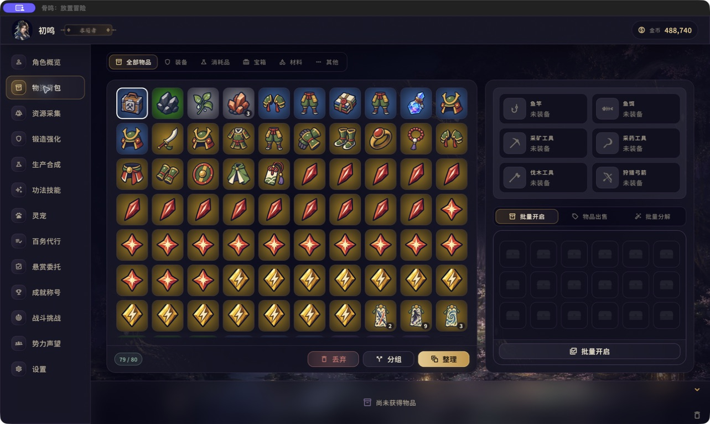
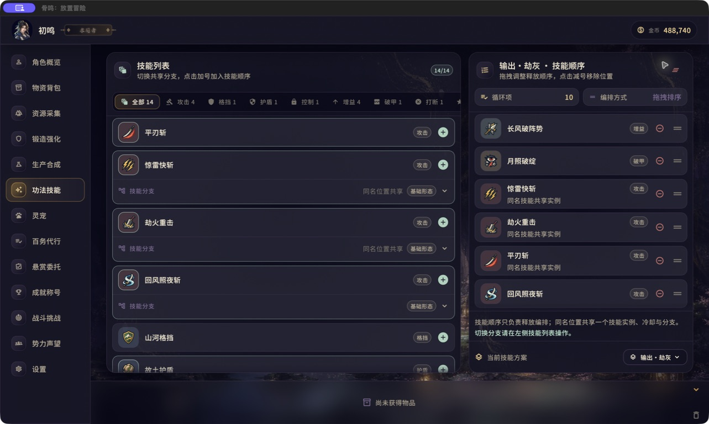
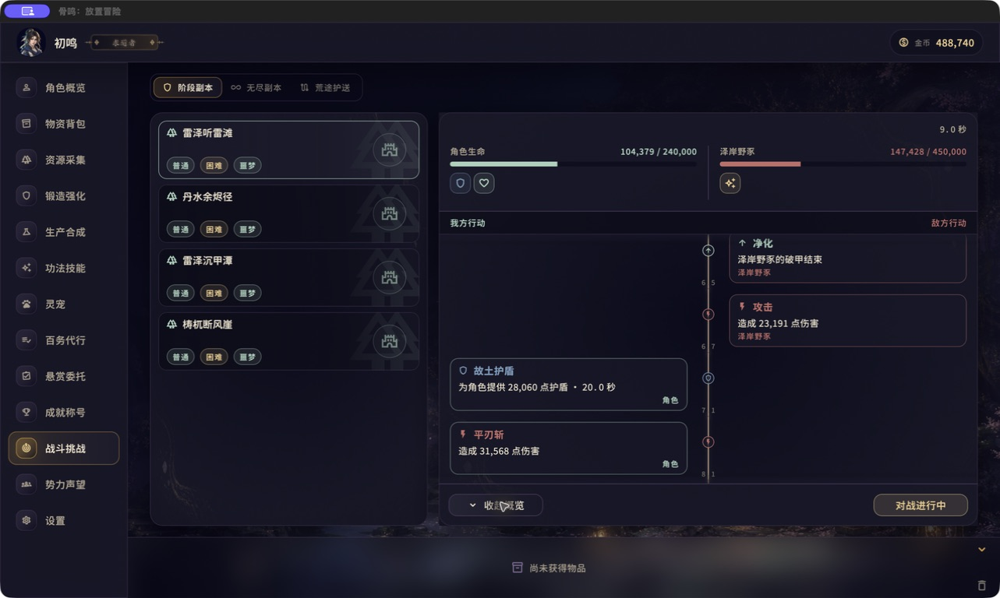

A / 01
装备驱动，而非数字驱动
来源、稀有度、独特效果与适用场景共同决定价值。真正的好装备，会让你愿意重新思考整套构筑。
单机 MMORPG放置冒险
为时间有限、仍想拥有长期成长与装备成就感的玩家而做。选择目标，调整装备、技能与加点，让战斗自动推进——真正重要的决定，始终留给你。
装备驱动 · 自动战斗 · 永久积累
01 核心体验
《骨鸣：放置冒险》不是一串不断上涨的数字。每件装备都有来源与取舍，每套技能都改变战斗节奏，每次失败都在告诉你下一步该改什么。
自动战斗承担重复过程；目标选择、角色构筑与成长规划由玩家掌控。永久成果不会因为活动轮换而清空，也不需要依靠固定时段上线维持进度。
02 为有限时间而设计
你不需要守着屏幕反复点击。每次上线先看清现状、做出几项有意义的选择，再让角色按你的构筑继续前进。
A / 01
来源、稀有度、独特效果与适用场景共同决定价值。真正的好装备，会让你愿意重新思考整套构筑。
A / 02
生命、状态、技能与关键事件清楚呈现。失败会说明问题，胜利也能看见你的选择如何生效。
A / 03
角色、装备、构筑与收藏持续保留。活动可以改变阶段目标，但不会让已经投入的成长失去意义。
03 实机画面
以下画面直接截取自当前 macOS 开发版本，界面与内容仍在持续打磨。



04 一段完整的成长旅程
01
02
03
04
05
06
05 无名者的世界
九神以天道之名统御九州，又以天劫阻断凡俗登天。你从一枚残破古玉中听见被遗忘的真相——天劫并非天地法则，而是一道可以被打破的禁制。
不是为了复仇，只为证明：凡人亦可封神。
06 仍在开发中